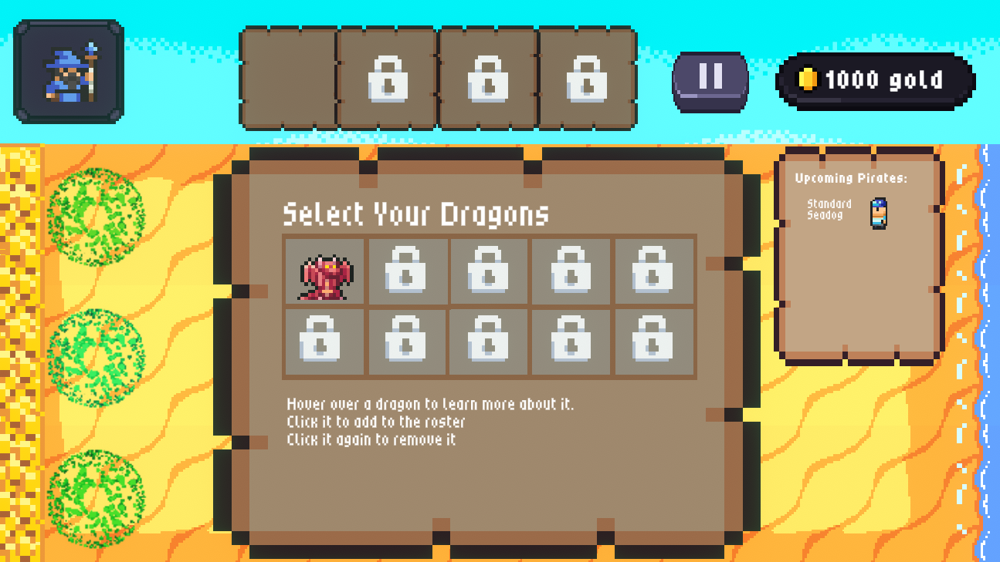
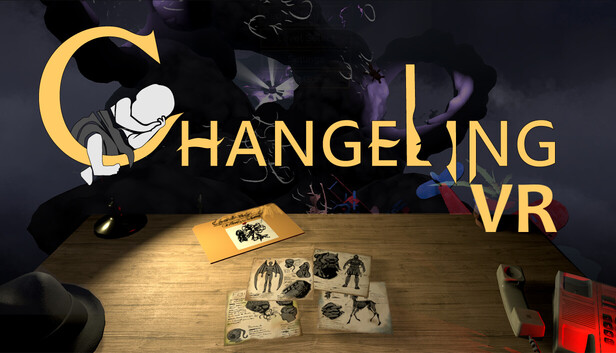

Project Showcase
Pirate Dragon Clash
Personal Project: Unity, C#, and WebGL project. Browser Game (Computer Support Only)
Play the gamehere!
Enter the password: PirateTreasure#10 to play!
Pirate Dragon Clash is a tower defense game in which you play as a wizard that must protect their gold from pirates by summoning dragons! The game is meant to be a reactive type of tower defense game, in which there is more weight to what you place down at a given time. It also has a back and forth lane system where pirates will take gold, but then have to run in the opposite direction and leave the island. With this system, the player has a chance to recover their lost gold from these pirates if they defeat them before they escape! This game was developed using Unity in which I programmed all of the mechanics of the game. This includes aspects such as the dragon towers, pirate enemies, projectiles, gold collection, enemy wave system, menu system, audio management, and game states.
Changeling VR
Team Project (RIT Games and Interactive Media): Unreal Engine VR Game (Steam Support)
Find the site here, or look on steam!
Changeling VR is a narrative mystery game developed by the staff and students at Rochester Institute of Technology. I was a part of one of the teams on this game that worked as a programmer and level designer. Along with this, I also frequently worked on testing and documentation while coordinating my efforts with the rest of my team on this unique Unreal project.
